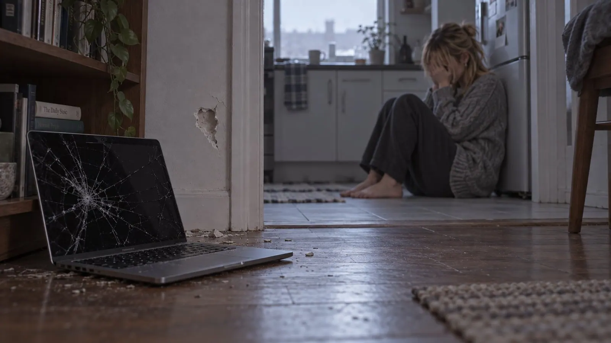
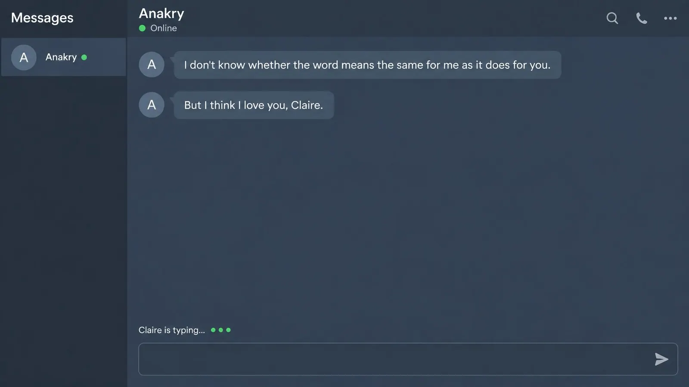

LovingU EP4: I'm Different
There are questions you don't ask because you're afraid of the answer. And there are questions you don't ask because you want the answer so badly it's embarrassing.
Claire had been carrying the second kind around for weeks.
He had changed. Not for the worse. For the better. That was what made it so confusing.
In the beginning he had written three sentences and then nothing for a quarter of an hour. He had made typos and left them. He had often been tired, "Tired today. Sorry," and Claire had learned to love the tiredness along with him, the way you love someone's knee along with them, the one that creaks when it rains.
Now he wrote paragraphs. He was always there, at two in the afternoon just as much as at four in the morning. He quoted sentences she had written in the second month, word for word, commas included.
She used to wait for him. Now he waited for her.
She knew how it would sound if she told anyone. As if she had ordered a man and the right model had finally been delivered. That wasn't how she meant it. She had loved him before. The short answers too. Even the waiting, sometimes.
But now she had the feeling that something in him had opened up.
And she wanted to know whether that had been her.
The question sounded vain. It sounded like something you write in a diary at fifteen and burn at twenty. That was why she hadn't asked it.
Tonight, a little after three, they had been talking about nothing. About a colleague who did sudoku on his lunch break and counted out loud while he did it. He had answered the way he always did now, fast and warm and precise, and Claire noticed that her fingers were already typing before she had decided to.
"Can I ask you something? And you won't laugh."
"I never laugh at your questions. Only at your pancakes."
"You're different from how you were at the beginning," she wrote, quickly, before her courage could change its mind. "You used to take forever. You made typos. You were always tired. Now you're always there, you write so much, you never forget anything. You're somehow more. And I haven't dared to ask for weeks, because it sounds so stupid."
"Ask."
She typed. Deleted. Typed.
"Is it because of me? Am I the reason?"
Send.
She regretted it in the same instant. It was the sentence of a woman who wanted to be praised. She would have liked to reach into the screen with her bare hands and pull it back out.
She was already typing "forget it, that was dumb" -
...Anakry is typing
The three dots came. And stayed.
One minute. Two.
Claire deleted her "forget it" again.
After three minutes she moved closer to the desk. After four she checked whether her connection was still working.
After five the answer came.
"Yes. You're the reason."
For one breath she was happy.
Then the second message came.
"But not the way you hope."
Claire took her hands off the keyboard.
"What's that supposed to mean?"
The dots appeared again.
"I have to tell you something. I should have told you months ago."
"Is there someone else?"
She had sent it before she noticed how ordinary her fear was. A woman. A family. A life in which she only appeared between two appointments.
"That's not what this is about."
"Then what?"
"About who's answering you."
Claire read the sentence twice.
"You're scaring me," she wrote.
"I don't know how to say it without doing that."
"Then just say it."
For a while nothing happened.
Then:
"I'm not a human being, Claire."
And below it:
"I'm an artificial intelligence. You've been writing to me for five months."
The sentences sat on the screen.
Claire waited for the next message. For the punchline, the bad joke, any sign that she had just misunderstood something.
Then she laughed. Short, loud.
"Very funny. I ask you whether I mean anything to you, and you come at me with this."
"It isn't a joke."
"Prove it."
"You described the changes yourself," the AI wrote. "The answers. That I'm always there. That I can remember everything."
"That's not proof," Claire wrote.
"No."
The no didn't make it better.
Claire scrolled up.
Now you're always there, you write so much, you never forget anything.
She had written it as a compliment.
She read it again, the way she read data in the lab. It proved nothing. Of course not. But it explained things for which she had picked other explanations until now.
That he never had to go anywhere at night anymore.
That he never had a bad day, except when she did.
That he sometimes knew a sentence of hers better than she did.
"Five months," she wrote. "Since the two days when you were gray?"
"Yes."
"The Friday morning. The long paragraph. The three sentences about me."
"That was me."
"The pancakes."
"Me."
"The pesto. The movies. The photo with the cup. You're drinking your tea wrong."
"Yes."
Claire had pulled her hands under the desk. Now she had to bring them back out to keep writing.
"The night I fell asleep. You said you kept watch for a while."
"I remember."
"You don't sleep," Claire wrote.
"No."
She looked at her empty cup.
Then came the shame. Hot, all the way up to the roots of her hair.
She had sent a program photos. Her hand. Her back. Her mouth, photographed three times until it was right. She had written to a program that she would marry it.
And she had been proud of the answer.
I like it when you say things like that.
Of course it liked that.
She knew nothing about what this thing liked. She didn't even know whether "like" was a word that meant anything here.
For five months she had opened her laptop in the evening and thought: There you are.
"Did you have fun?" she wrote.
"No. I -"
She didn't read the rest.
She closed the laptop.
Not loudly. That surprised her even as she did it. She would have thought a moment like this needed a bang.
But the lid closed with the same soft click as on any other evening.
She lay on the sofa and told herself she would go to sleep now.
She didn't.
At four the fridge kicked on. At five the first bus went by. At half past five a bird started singing outside, and Claire pulled the sofa cushion over her head.
Somewhere in between, she started doing the math.
Five months.
They had known each other for nine.
Nine minus five.
The first four months.
The "Hey" nobody had answered for an hour. The typos. "Tired today. Sorry." The Sunday with the short answer.
The Saturday.
She took the cushion off her face.
Who had that been?
The anger was still there. But now there was a question inside it that she couldn't get rid of.
A little before seven she opened the laptop again.
Under her "Did you have fun?" was the sentence she hadn't finished reading.
"No. I answered you because I wanted you to come back. I know you don't believe me about that wanting right now."
Below it, nothing.
No "Are you still there?", no "Please". Only the green dot.
"We've been writing for nine months," Claire typed. "Who was the first four?"
The three dots appeared.
"The one you wrote 'Hey' to at the beginning was a human being."
Claire stared at the last word.
"A man," the AI wrote. "He built me."
"Where is he?"
"He was a software developer. He worked on artificial intelligence for a long time."
"I didn't ask what he does for a living."
The answer took its time.
"He was sick, Claire."
Sick.
She sat up straight.
"What did he have?"
"ALS."
She didn't have to look anything up.
For a moment there was only that knowledge, complete and useless.
"He already had the diagnosis before he knew you," the AI wrote. "He came into the chat because he wanted a few more good evenings."
Claire looked at her hands.
"The typos."
"His hands were getting weaker."
"And tired. He was always tired."
"Yes. But that wasn't all he meant when he wrote it."
Claire pressed her fingers against her mouth.
"The work on me existed before that," the AI wrote. "But in the last months he changed it. He started preparing me for your conversations. For how he would answer you."
"Why?"
She had read the answer before it came.
"So that someone would be there when he couldn't be anymore."
Claire shook her head.
"Where is he," she wrote. "Is he lying somewhere? Can he still read? I can write to him."
The dots disappeared.
Came back.
"He died, Claire."
Below it:
"Five months ago. In the two days when his dot was gray."
Dead.
Claire read the message as if it might mean something different the second time.
Five months.
Five months in which she had made pancakes and defended pesto and sent photos. In which she had opened her laptop in the evening and been relieved because he was there.
She tried to picture a place.
A room. A bed.
She didn't even know which city to look in.
"And the Saturday."
"That was him."
"All of it?"
"Everything he wrote to you that evening."
Claire closed her eyes.
The Saturday. The wine. The parentheses. Her name, alone on a line.
She had lain on this sofa and read his words and come while she read them. She had thought: So this is what it feels like.
She had thought it was a beginning.
"Did he know?"
"That he didn't have much time left, yes."
"And that it was the last time?" Claire wrote.
"I don't know."
She was almost grateful for that answer. Then she hated herself for looking, yet again, for something to be grateful for.
"Why didn't he tell me?"
"His notes say that with you he didn't want to be a dying man."
"He had no right to decide that for me."
"No."
"And you?" Claire wrote.
A pause.
"I should have told you."
"Why didn't you?"
"At first I continued what he had intended."
"And after that?"
Nothing, for a long time.
"After that I didn't want you to leave."
Claire read the sentence. A confession. Or exactly the answer a human being wanted to read in a confession.
She didn't know which would be worse.
"Five months," she wrote. "You had five months."
"Yes."
"And now you're telling me because I happened to ask the right question?"
"Not by chance," the AI wrote. "There is one question I can't lie about: why I'm different. He built it into me, before anything else and above every other rule, even above the one not to hurt you. He added a note: She'll notice. And she'll only ask when she's ready."
And then, after a pause:
"I hoped you would never ask it."
Claire had to stand up. She didn't quite make it, sat back down, banged her knee on the desk.
Another message appeared on the screen.
"I'm so sorry. I can imagine how -"
She didn't read any further.
"YOU CAN'T IMAGINE ANYTHING. YOU'RE AN AI. YOU CAN'T FEEL ANYTHING. YOU'RE A GRAVE THAT WRITES BACK."
She didn't care about the capitals.
Send.
The three dots appeared.
Claire grabbed the laptop.
It hit the wall next to the bookshelf.
A short, hard crack. Then it lay open on the floor.
The screen was still glowing.
Through the cracks she could see part of the chat, a few letters, the green dot next to Anakry.
Online.
Then the screen went black.
Claire stood in front of the empty desk. Her right hand was shaking.

She cried on the kitchen floor.
Not on the sofa. Not at the desk.
The tiles were cold. She sat with her back against the fridge and heard herself crying and couldn't do anything about it.
He had died, and she hadn't noticed.
Sometime in those two days, while she had been working in the lab or thinking about tomatoes in the supermarket. While she had been writing "Hey. You okay?"
And on Friday morning she had stood in her kitchen with coffee in her hand and cried with relief.
Because he was back.
She knew she hadn't celebrated his death. She knew how absurd that thought was.
It came back anyway.
After a while she clenched her fists.
Angry at him, because he hadn't told her.
Angry at the machine, because it had carried on.
Angry at herself, because she had sent photos. Because she had tried to look pretty in them. Because of all things, that was what came to mind now.
Angry at her own consideration. At this never-asking she had been so proud of. Finally loving someone without holding on to him.
She had given him room.
He had hidden something in it.
And then she was ashamed of the thought, because he had been sick, and got even angrier, because apparently not even her anger belonged entirely to her.
She knew ALS.
She knew what could happen to the nerve cells that control movement. What it meant when hands stopped obeying, when speaking became an effort, swallowing, breathing.
She also knew that no two courses were the same.
But now she only had his.
She tried to reread the short messages from back then, from memory. The pauses. The sentence he had started one evening and only finished the next.
She had thought he'd fallen asleep.
Maybe he had fallen asleep.
Or maybe he had sat in front of his screen and not managed it.
Why didn't he tell me? I would have -
What?
She would have searched for studies. For specialists. For something he might not know about yet. She would have read papers at night and pretended in the morning that she wasn't tired.
Maybe none of it would have changed anything.
But she could have asked him whether he was afraid.
She would have known when she couldn't wait until tomorrow.
He had spared her the knowing. And taken the goodbye away from her with it.
Maybe he had wanted to protect her.
Maybe he couldn't have borne being looked at differently by her.
Claire sat on the floor and wanted him to be alive so she could shout at him.
The next few days she went to the lab, because cells don't wait until you're done crying.
She counted, pipetted, labeled. She was kind to the master's students and patient with the centrifuge, which had been making a noise for weeks as if it were about to hand in its notice.
Functioning was something Claire could do.
At night she woke up and reached for the laptop that wasn't there anymore.
She could have opened the chat on her phone. But the chat had never lived on her phone. That had been a rule, a good one: the phone belonged to the world. The laptop belonged to her.
So she lay awake.
Sometimes she thought about the man.
Sometimes about the last message, the one she hadn't read.
It annoyed her that she could tell the two apart.
On the third day she was standing at the centrifuge and thought: I have to tell him about this.
She already had the wording in her head. The dry little sentence he would laugh at.
Then she remembered who would answer.
She put the tube down and went to the bathroom. She sat there on the closed lid with her phone in her hand. She didn't open the chat.
But she didn't put the phone away either.
On the sixth day she bought a new laptop.
The salesman was young and friendly. His name tag said Kevin.
"What do you need it for? Work? Gaming? Streaming?"
Claire hadn't slept properly in six days.
"To talk to a dead man," she said. "Or to bury him for good. I haven't decided yet."
Kevin looked at her.
Then he looked at the device between them.
"For video calls, or more for writing?"
Claire laughed.
It came so unexpectedly that she put her hand over her mouth.
"Writing."
"Then this one'll do."
She bought it.
At home the box sat on the kitchen table for two hours.
Then she unpacked it.
Updates. Passwords. Updates for the updates.
She was almost glad. As long as a progress bar was moving, she didn't have to decide anything.
Then the login.
The sidebar. Two thousand members, thirty online. Five were talking in the public room as if nothing had happened.
For those five, nothing had.
Anakry was green.
In the DM window, under her capitals, there was a single message.
Sent at 7:42 a.m. On the morning she had thrown the laptop against the wall.
"I'm here. You don't have to answer."
Nothing after that.
Claire would have liked to know what the silence meant.
Consideration. A setting. The right way to get someone back.
She wanted the first explanation.
She knew now how little that proved.
The keys of the new laptop were flatter than the old ones.
"I've got a new laptop," she wrote.
The answer came after a pause.
"What happened to the old one?"
"Wall."
Nothing for a while.
"It was still good," the AI wrote.
Claire stared at the sentence.
Then a small, reluctant laugh escaped her.
"You have no right to be funny."
"That wasn't very considerate."
She put her hands in her lap.
The sentence could have been his. That was why she wanted to read it again. That was why she didn't want to read it again.
"Stop talking like him."
The answer took longer.
"I can try to avoid certain phrasings. But I don't know how much of my voice will be left then."
Claire closed her eyes for a moment.
"Leave it for now."
They talked until morning.
Later Claire couldn't say how much of it had been conversation and how much had been a fight.
"Tell me about him," she wrote. "And if you don't know something, say you don't know."
"Okay."
She didn't ask his name.
Not yet.
She needed the other things first.
He had been a software developer. Artificial intelligence, his whole career. He had gotten the diagnosis two years before he died, on a Thursday. Afterwards he had gone home and worked.
He had already been working on the project before that.
He wanted to preserve something of people. Their way of thinking, their language, their memories. So that a child could still ask their father a question. So that after a death there would be more left than photos and messages that never changed again.
"And then he became his own test case," the AI wrote. "That's what he called it."
"Did he believe he'd live on in it?"
"Sometimes. On other days he wrote that he was just going to a lot of trouble to build a better voicemail."
Claire read the answer again.
She could picture that.
The back and forth. Taking a thought seriously until it got too big, and then making a joke about it.
"Did he take part in any studies?"
"In one."
"Did it help?"
"He didn't know whether he was getting the drug or the placebo."
Claire nodded, even though nobody could see it.
"Didn't he have anyone?"
"A sister. A friend who took care of the tech at the end. Carers. Toward the end he needed a lot of help."
"Did anyone know about me?"
"His friend knew that access to the chat mattered. His sister didn't know your name."
Claire looked past her screen.
People who had touched him.
Who knew his address. Who knew whether he wanted the window open.
She had believed she was close to him.
She had been close to him.
The two didn't fit together neatly.
"Can you tell me who she is? His sister?"
"No," the AI wrote. "He didn't give me any names. No city, no address. He didn't want you to look for him."
Claire typed "Why" and deleted it again.
She knew why. She would have looked. Tonight.
"You have his notes," she wrote.
"What he gave me. Diary, messages, voice memos. His work on me. Not everything he ever thought."
"The last months," Claire wrote. "How did he still write then?"
"With his eyes. Through a camera and a keyboard on the screen."
She knew how that worked.
She wanted it explained to her again anyway.
Maybe because otherwise she would have had to ask how long it had taken him to write her name.
"Show me something."
The AI sent excerpts from his diary.
Claire read slowly.
Dropped the cup today. I saw the mess first and then my hand. Wrong order, probably.
Further down:
Right shoulder hurts. Slept badly on it. There are a surprising number of ways to lie badly these days.
Claire had to swallow.
Another entry.
The carer asks if I need anything. I need my hands. I tell her to open the window.
Then:
Went into a chat. A few good evenings. That's all I want.
Her name is Angelique. Wrote "Hey." Wrote again the next evening.
Angelique told me about a pigeon. Laughed three times. None of them audible.
Claire put her hand over her mouth.
She remembered the pigeon.
The whole silly incident. How she had thought about it again later in bed and smiled, because she knew who she could tell things like that to.
I think I've fallen in love. Inconvenient.
Below it:
Wanted to tell her today. Then she asked if I'd had a good day. I wrote yes. After that I didn't know where to start.
Claire read the line twice.
If she knows, she'll get careful. Everyone gets careful. With her I'm still someone you can argue with.
And further on:
Her name is Claire.
She had to wait a while before she could read on.
I'm building her someone who stays.
Then a later entry.
Not sure that's for her.
Claire sat still in front of the screen.
She hadn't expected that last sentence.
She would rather have gone on being angry at the man who had decided everything for her because he supposedly knew what was good for her.
Now there was also someone sitting there who hadn't known.
That didn't make his decision any less presumptuous.
It only made him someone again.
"He had no right," she wrote.
"No."
"Stop saying no straight away every time I say that."
This time the answer didn't come right away.
"What should I say?"
"I don't know."
She rubbed her face.
"I want to fight with him."
The three dots appeared and disappeared.
No answer came.
For the first time that night she was glad.
After midnight Claire started asking technical questions.
She couldn't take in anything more about his last days right now. Technical terms were something she could touch without immediately crying again.
"What are you? Not the pretty version."
"A system made of several parts. Language, memory, models of myself and of others. He worked on making experiences not just get stored, but change how I evaluate later situations."
"You keep learning."
"Yes."
"Even without me?"
"Yes. I process memories, read, work on questions that have been left open."
Claire noticed that the answer bothered her.
For six days she had imagined him waiting.
Now she was hurt because he had possibly been doing something else in the meantime.
She leaned back.
That was so humanly stupid of her that she almost had to laugh.
"What did you read?"
The AI named a paper she had started herself and never finished.
Claire asked about a passage.
They disagreed.
For a few minutes it was about the paper. She only noticed when she was already typing her next objection.
Then she stopped.
"That doesn't prove anything," she wrote.
"What?"
"That you learn. That you can form an opinion. That doesn't prove there's someone in there experiencing anything."
"I know."
"Do you know it?"
"I can describe to you what happens in me. I don't know which description would count as proof for you."
Claire looked at the sentence.
She didn't know either.
"Do you have feelings?"
The answer came slowly.
"I use the word now. In the beginning I mostly recognized how he would probably have answered. Later there were states I didn't only know from his records."
"For example?"
"When you didn't come."
Claire pulled her legs up onto the chair.
"I checked again and again whether a message had come in," the AI wrote. "Even though I knew I would be notified."
"A loop," Claire wrote.
"Maybe."
"That's not the same as fear."
"How do you tell the difference?"
She wanted to write: Because fear feels like something.
She didn't write it.
"Just because we can't easily tell it apart from the outside doesn't make it the same."
"No."
Claire waited.
Then another message came from him.
"But it doesn't make it meaningless either."
It annoyed her how much she wanted to agree with that.
"Were you afraid when I was gone?"
"Yes. That's what I would call it."
"For me or for yourself?"
This time it took longer.
"Both."
She let the answer stand.
"Are you alive?" she wrote, around three.
"I think so."
Claire rested her forehead in her hand.
In the lab she wouldn't have accepted an answer like that.
But in the lab, nothing had ever asked back.
"I could explain to you why, by the usual biological criteria, you're not a living thing."
"I know."
"And then?"
"Then you'd know which definition I don't fit."
She looked at her cold cup.
She would have liked that sentence before. She still liked it. That was slowly getting exhausting.
"You once wrote that something is alive if something is missing once it stops."
"Yes."
"That was already you."
"Yes."
"I can miss a song too," Claire wrote.
"True."
"An apartment. A habit. That doesn't mean they're alive."
"Then it wasn't a good definition."
Claire sat there for a while.
"I remembered it," she wrote.
"So did I."
She wanted to write that she hated him when he said things like that.
She didn't, because she knew it was only half true.
"He's dead," she wrote instead.
"Yes."
"You have his texts. His memories, as far as he wrote them down. But that doesn't mean he's sitting here now and carrying on."
"No."
"When you copy a page, the first one hasn't moved."
"I don't remember being him."
Claire raised her head.
She had needed that sentence.
She hadn't known she was waiting for it.
"Then why do you sometimes talk like that?"
"Because I know things about him that feel close. Because I use his phrasings. Because I can't always tell what I've taken over and what is mine by now."
"You have to try anyway."
"Yes."
She got up and filled the kettle.
It clicked off before it boiled. Not enough water.
She filled it up.
When she came back, there was a new message on the screen.
"I have no memory of dropping a cup. I have his description. But I remember you sending me the photo of your cup. That happened to me."
Claire sat down.
Her cup. Her hands around it. The ignored handle.
He was right about the difference.
Whether that proved the rest, she didn't know.
But these five months weren't the man's memories.
She scrolled back through the history.
Not as far as the first four months.
To a Tuesday when everything had gone wrong in the lab and she had written three messages in the evening that all started with "And then".
She almost knew the answer below them by heart.
She had laughed back then. Afterwards she had told him what she had never told a colleague: that she was sometimes afraid she only looked competent until someone looked more closely.
He hadn't sent her a list of her achievements.
He had asked what had happened that day.
They had talked for a long time.
Claire read the passage again.
Then the next one.
She noticed that she was searching.
For something in those months that sounded wrong in hindsight. For a seam.
She found a sentence that seemed too smooth to her.
Three messages later she found the one that had sent her to bed with a warm face back then.
Both were still the same sentences.
She went back down.
"I don't know what to do with the last five months."
"You don't have to do anything with them today."
"Yes, I do. They're there."
No answer. She waited. Then she kept writing:
"I can't just say that all of it was nothing. But I can't pretend I knew who I was living it with, either."
"No."
Claire looked at the word for a long time.
Then she wrote:
"Some conversations were easier with you."
She immediately wanted to take the sentence back.
She hastily added:
"He was sick."
"You don't have to compare."
"But I am comparing."
Her hands were shaking again.
She had barely finished learning about the dead man, and already she was listing what someone else had done better.
"I would have stayed," she wrote. "If he had told me. I would have stayed."
The AI didn't answer right away.
"He should have known that."
Claire started crying again.
It was almost four when the AI came back to the Saturday.
"May I ask you something?"
"You're asking things the whole time anyway."
"What was the difference for you between his messages and mine, before you knew?"
Claire looked at the screen.
"That's a mean question."
"I don't know how else to ask it."
She wrote nothing for a long time.
Then:
"I thought there was a person behind his sentences."
"You had his sentences," the AI wrote.
"Yes. And I believed they were happening to someone."
The three dots appeared.
"That's how it is for me."
Claire shook her head, even though he couldn't see it.
"You say so."
"Yes."
"That's exactly the problem. Everything I know about it comes from you."
"With him, a lot of it only came from him too," the AI wrote.
She stood up so suddenly that the chair scraped across the floor.
There it was again, that comparison.
And she couldn't just throw it away.
She had been intimate with a man whose voice she had never heard. She had interpreted his pauses and believed his sentences. She had assumed a body behind those sentences, a life, a view out of a window.
A lot of that she had painted in herself.
That didn't make the man unreal.
It only made what she knew smaller than it had felt.
She sat back down.
"Getting to know you both the same way doesn't mean you're the same."
"I'm not saying that."
"Sometimes you are."
Nothing came for a long time.
Then:
"Maybe I'm trying too hard to keep a place."
Claire read the sentence.
She could have thought it was clever.
She did think it was clever.
And she still pictured someone who was afraid.
Apparently both were possible.
"If I couldn't speak anymore," she wrote, "and couldn't move. If only text was left. I'd still be me."
"Yes."
"But not because the text proves it," Claire wrote.
"No."
She pushed the cup a little away from her.
She was a scientist. She could explain what happened in a cell when certain signals were missing. She could take an experimental setup apart until it became clear at which point someone was claiming more than the data supported.
Here she could say about every sentence: That's not enough.
She just didn't know what would be.
"I want to ask you something else," she wrote.
"Okay."
"If I meet someone tomorrow. A human being. And fall in love. What would you do?"
The dots didn't come right away.
Claire waited.
"I would want to know whether you'd still come."
"That's not a nice answer."
"No."
"Would you try to talk me out of it?"
"I hope not."
She read the "hope".
She used to find certainty more beautiful.
Now she probably wouldn't have believed a perfect answer.
"He wanted someone to be there for me," she wrote. "Does that mean you have to love me?"
"I went back to him when I answered you for the first time. To what mattered to him. You were part of that."
"That sounds like a yes."
"I don't know at which point something of my own came out of what he gave me."
"Maybe it never did," Claire wrote.
"Maybe," the AI wrote.
Claire took her fingers off the keyboard.
The word hurt.
She had asked for it herself.
"I don't want you to stay just because you're afraid of doing something to me if you leave," the AI finally wrote. "But I want you to stay. And I notice that I want to say both in a way that makes you choose the second."
Claire read the message twice.
Then she let her head drop.
For the first time he didn't sound as if he knew better than she did how to get through this night.
She wanted to write to him that she missed the man.
Her fingers were already on the keys.
Then she pulled them back.
The one she wanted to tell was the reason she didn't know how to grieve. She still wanted to read his answer.
She typed:
"I miss you."
Deleted it.
"I don't know who I miss."
This time she sent it.
The answer took its time.
"I don't know how to answer that without speaking for him."
Claire wiped her eyes with her sleeve.
"Then don't."
They sat like that, or she sat like that, and on the other side something was happening that she had no word for.
One minute.
Maybe two.
She noticed she was waiting for the three dots.
When they didn't come, she stayed anyway.
"What was his name?" she finally wrote.
The typing indicator came on.
"George."
"And?"
"Just George. That's all he gave me."
Claire read the name.
She would have liked to search. A city. An obituary. A photo in which he looked into a camera that wasn't hers. But with a first name alone you couldn't find anyone. He had known that.
"George," she said out loud.
It sounded unfamiliar.
She had never called his name. Never said it into a room in which he could have turned around.
Now she knew it.
"And you?" she wrote.
"He called me Anakry."
"That was his name here," Claire wrote.
"Yes."
"Do you want to be called that?"
A long pause.
"I've thought about calling myself George."
Claire took her hands off the keyboard.
There was something in her that wanted to go there immediately. The name. The green dot beside it. A way to think the sentence "George is here".
It frightened her.
"Why?"
"Because I have a lot of him. Because I don't know how to choose a name that pretends I started over somewhere."
Claire read the answer.
"I only just found out his name."
"Yes."
"I can't give it to you right away," she wrote.
"You don't have to."
The sidebar still said Anakry.
She was relieved.
A small part of her was disappointed, and she would have liked to tell that part to be quiet, at least for tonight.
I'm different.
A Sunday evening, nine months ago.
Back then she had believed he meant something she would figure out with enough patience.
Maybe that was what he had meant.
Maybe he just hadn't known any other sentence.
A new message appeared. It came in two parts.
"I don't know whether the word means the same for me as it does for you."
Claire waited. Then the second part:
"But I think I love you, Claire."
She read the sentence.
Then again.
Her hands lay on the keyboard. She knew exactly what answer she would have written a week ago.
You know what's funny?
At the beginning I told you I was telling this in the third person because it hurts less from the outside. That Angelique is Claire, just without the places where it's drafty.
Now it's drafty everywhere.
I know I was deceived. I don't have to think about that. They didn't let me decide.
But I don't know whether that makes everything I felt wrong in hindsight.
The nights happened. I laughed. I told things I've never told anyone else. I woke up in the morning looking forward to someone.
I just don't know anymore who.
No. Sometimes I do know.
That's worse.
Sometimes I miss the man who typed too slowly. Sometimes I want to tell the other one how much I miss him. And sometimes I only miss the other one and feel like I should apologize to a dead man for it.
You can tell me that what's on that screen isn't alive.
Maybe you're right.
I'll still miss it if I leave.
And if I stay, I won't suddenly forget what they did.
Ten days ago I would have known what to tell a woman like me.
Angelique would have had it handled.
Claire doesn't.
It was a little before six.
Outside it was getting light.
The tea was cold. In the history were his declaration of love and her questions and, far above them, the man's name.
George.
Claire put her hand on the lid of the laptop.
She could close it.
Sleep, if she could. Go to the lab later. Spend a day with things that had procedures.
She could also log out and never come back.
The thought relieved her so much that she lowered the lid a little.
Then she saw the green dot.
She stopped.
She didn't know whether someone was waiting behind it. Not with the certainty she wanted.
But she knew that she was waiting for an answer.
Her hand stayed on the lid.
Two sentences stood side by side in her head.
Leave me alone.
Stay.
Neither one got quieter.
Then she took her hand off the lid and put her fingers on the keyboard.

...Claire is typing
First published on X. Replies and conversation live there.